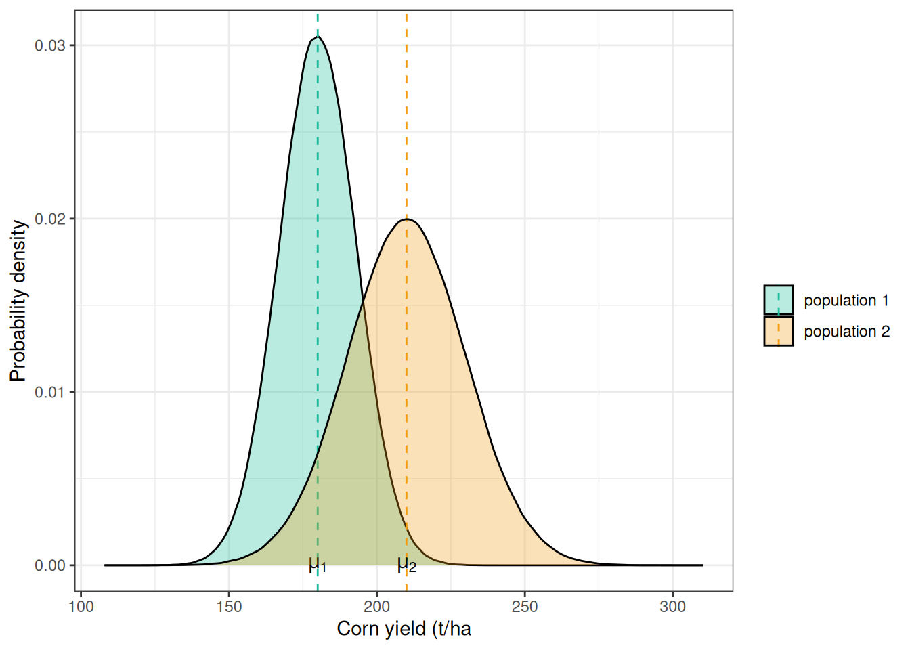
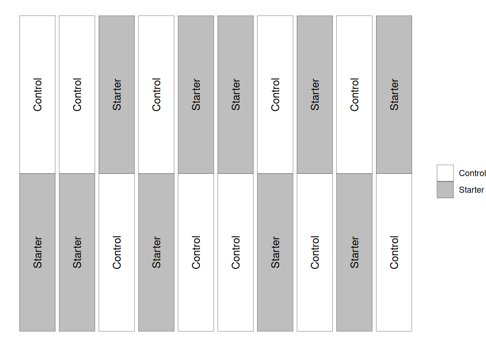
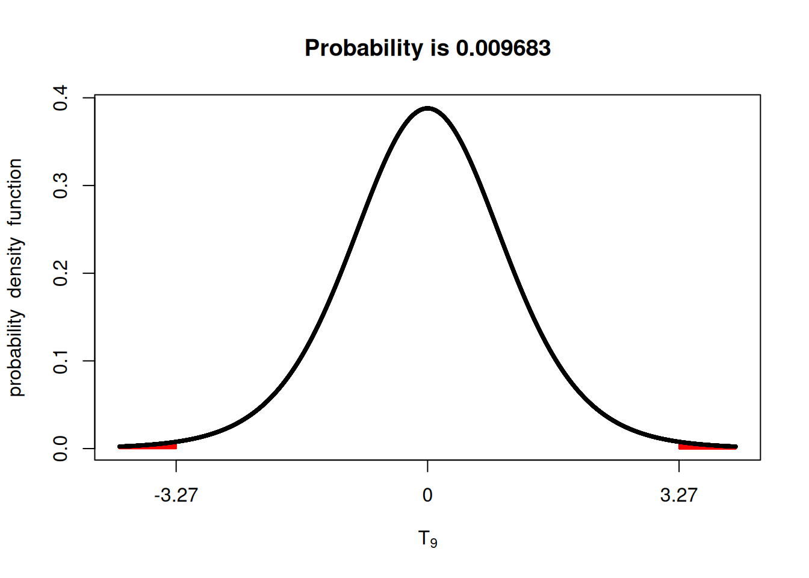

What have we learned so far?
- So far, we have spent a long time learning about populations and how to use the normal distribution model to represent them. We learned how to compute probabilities, build confidence intervals, and make statements about the population mean (\(\mu\)).
- We have also looked at how we cannot always collect all the population data, which forces us to rely on samples.
- Then, since we estimate the population variability (\(\sigma\)) using the sample variability (\(s\)), we use the \(t\)-distribution, which approximates more and more from the normal distribution as we get more samples.
- Using sample data, we learned how to compute the standard error of the mean, build confidence intervals, and make statements about the population mean using the samples.
Although I enjoy this, I understand if you are restless and wondering “how am I going to use any of this in the real world?”
Up to this point, we focused on estimating one population mean. Now we move to the question agronomists ask most often: comparing treatments.
Comparing two populations
What are we really asking?
Very often in agronomy (and in other fields as well), we will want to compare two populations to help us make informed decisions. For example, we might want to compare a given fertilizer source, or whether a given corn hybrid outperforms a traditionally grown corn hybrid consistently. Additionally, we might ask whether the yield difference of a given transgenic trait is worth the added cost.
While all of these questions (and many more!) can be asked, we can think of a framework that can generalize these questions. In terms of statistics, what we are really asking is: is the expected value of one population different from the other’s?
What do we expect from these populations?
There is a more formal definition of expected value, but, intuitively, we can think of what you would expect to observe in the population. In a bell-shaped population like the normal distribution, this value would be the population mean (\(\mu\)).
In the graph below, you can see an example with corn yield values for two populations. Population 1 has a mean of 180 bu/ac, while population 2 has a mean of 210 bu/ac. You can think of populations 1 and 2 as coming from two different treatments. These can be fertilizer and no fertilizer, fungicide and no fungicide, or hybrid A versus hybrid B.
So, when we compare these two populations, we are really asking:
\[H_0: \mu_1 = \mu_2 \newline or \newline H_a: \mu_1 \ne \mu_2 \]
And this is a hypothesis testing problem.
Hypothesis testing
We already saw a little bit of hypothesis testing in the end of last week’s module, when we tried to get a bonus from our boss showing that we did get a yield greater than 12 t/ha, remember?
Now, let’s look at the structure for this type of test:
- We formulate the hypothesis we want to test — in this case, whether the two population means differ (\(H_a\)).
- Then, we formulate what is the null hypothesis (\(H_0\)), which is mutually exclusive with the hypothesis we are testing.
- We collect the data and test whether we can reject the null hypothesis. When we can, this provides evidence for the alternative hypothesis, but we can never prove that the alternative hypothesis is true.
There are hundreds of tests that can be used to test hypotheses. Here, we will focus on the paired \(t\)-test because it is designed to test the difference between two groups, which is a common agronomic problem.
The paired \(t\)-test
One way of looking for the difference in two populations is to look at the distribution of that difference. Translating this to the hypothesis testing framework, this becomes:
\[H_0: \mu_1 = \mu_2 \rightarrow \mu_1 - \mu_2 =0 \newline H_a: \mu_1 \ne \mu_2\rightarrow \mu_1 - \mu_2 \ne 0\]
Case study
The paired \(t\)-test allows us to compute some of the same statistics as we did in last class (t-value and confidence interval) for the difference between the plots within a pair. Let’s take a look at a trial in central Ohio in which they tested a starter fertilizer versus without the starter. Hopefully, then, the concept of a paired design will be clearer.
Looking at the data
In the figure below, you can see that going left-to-right, we have different pairs of experimental units (which are distributed up and down). In this case, the experimental units are randomized only within each pair (which the textbook calls a block).
This imposed structure is what allows us to conduct the paired \(t\)-test. If these experimental units had been distributed randomly throughout the field, this would not be an appropriate test.

Let’s take a look at the data. As we can see, each block has a pair of plots inside.
block plot treatment yield
1 1 11 Starter 193.4
2 1 12 Control 194.2
3 2 21 Starter 192.2
4 2 22 Control 189.0
5 3 31 Control 193.8
6 3 32 Starter 194.2Let’s take a look at the yield value of these treatments. In the plot below, the open circles represent the different observations for each treatment, and the triangle and error bar represent the sample mean plus or minus the standard error.
It seems like, on average, the yield when using the started was indeed greater. However, how can we test this hypothesis?
Here is the code for reference. I think it is important to be exposed to this ggplot syntax :)
ggplot(corn)+
geom_point(aes(x = yield, y = treatment), pch = 1)+
labs(x = 'Yield (bu/ac)', y = 'Treatment')+
stat_summary(aes(x = yield, y = treatment),
pch = 17,
fun.data = 'mean_se')+
theme_bw()
Computing differences
We want to test whether the mean difference between these treatments is zero. Let’s begin by computing the differences within each pair.
193.4-194.2 = -0.8
192.2-189 = 3.2
194.2-193.8 = 0.4
190.5-186.4 = 4.1
198.7-196.4 = 2.3
193.4-189.8 = 3.6
196-187.6 = 8.4
196.7-185.3 = 11.4
201.5-184.5 = 17
198.9-192.6 = 6.3 Let’s put these numbers on a graph so we can have a better look. It seems like very often, the starter fertilizer provided a yield boost. Once again, the open circles represent the different observations for each treatment, and the triangle and error bar represent the sample mean plus or minus the standard error.
On average, we see a yield increase of 5.6 bu/ac. This shows promise but let’s see if, given the variability in this dataset, we would expect to see an increase consistently if we ran this experiment multiple times. You know where this is going, right?

Confidence interval
To build our confidence intervals here, we will need a couple of things:
- A vector containing the differences
- Compute sample mean and standard error
- Choose a significance level (e.g., 95% or 99%)
- Bring all of these pieces together
Here, we can see a vector in which I collected all the differences within each pair/block.
differences 1 2 3 4 5 6 7 8 9 10
-0.8 3.2 0.4 4.1 2.3 3.6 8.4 11.4 17.0 6.3 Next, let’s compute the mean and standard error
xbar <- mean(differences)
n <- length(differences)
s <- sd(differences) / sqrt(n)
xbar[1] 5.59n[1] 10s[1] 1.708895Now, let’s check a value of \(t\) that would correspond to 95% of the probability distribution area
tval <- qt(p = c(0.025, 0.975),
df = n - 1)
tval[1] -2.262157 2.262157Now, the final step, we bring all of these pieces together and build a confidence interval
ci <- xbar + (tval * s)
ci[1] 1.724211 9.455789Interpreting these numbers
I would like to take a second to interpret these numbers. If we think about it, what do they represent?
These numbers indicate that the difference between these two sample means, if the experiment were repeated many many many times, would be between 1.72 and 9.46 bu/ac.
The fact that the lower bound does not include 0 is already an indication of the result of the \(t\)-test, but let’s conduct the test to verify.
\(t\)-test
To conduct the \(t\)-test, we flip the structure we used for the confidence interval. Instead of choosing a t-value that would correspond to a certain significance level, we compute the t statistic, as in last module.
\[T = \frac{\bar{X} - \mu}{\frac{S}{\sqrt{n}}}\]
In this case, let’s compute it for this dataset.
\[T = \frac{\bar{X} - \mu}{\frac{S}{\sqrt{n}}} = \frac{5.59 - 0}{1.71} = 3.27\]
Then, we can check using the fastGraph library. This shows us that the probability of us observing a t-statistic value more extreme than the one we observed (3.27) would be very small (< 0.01).
Thinking about the hypothesis testing scenario, we could say that there is strong evidence to reject the null hypothesis ($H_0 : _1 - _2 = 0 $).

R built-in methods
Since R is a programming language with a strong inclination towards statistics, it already has pre-built methods for this.
The t.test() function is what we would use in this case. The use of this function would go something like this.
t.test(x = VECTOR WITH GROUP 1 DATA,
y = VECTOR WITH GROUP 2 DATA,
paired = TRUE)Reshaping the data
Since we have to split this data frame between two vectors, this requires wrangling the data a little bit. We have to take the data from a long format, to a wide format. In this case, this is important to make sure that we do not mix up the yield data between blocks. I will not show how to do this here, as it would be distracting. We have an exercise dedicated to this.
We have to go from this:
block plot treatment yield
2 1 12 Control 194.2
1 1 11 Starter 193.4
4 2 22 Control 189.0
3 2 21 Starter 192.2
5 3 31 Control 193.8
6 3 32 Starter 194.2
8 4 42 Control 186.4
7 4 41 Starter 190.5
9 5 51 Control 196.4
10 5 52 Starter 198.7
11 6 61 Control 189.8
12 6 62 Starter 193.4
14 7 72 Control 187.6
13 7 71 Starter 196.0
15 8 81 Control 185.3
16 8 82 Starter 196.7
18 9 92 Control 184.5
17 9 91 Starter 201.5
19 10 101 Control 192.6
20 10 102 Starter 198.9To this:
block yield.Control yield.Starter
2 1 194.2 193.4
4 2 189.0 192.2
5 3 193.8 194.2
8 4 186.4 190.5
9 5 196.4 198.7
11 6 189.8 193.4
14 7 187.6 196.0
15 8 185.3 196.7
18 9 184.5 201.5
19 10 192.6 198.9Running a t-test
Now that our dataset has been reshaped, we can confidently run a paired \(t\)-test. Note that you have to specify within the function that the design was paired.
Just like that, within one function, we get the same values we’ve just manually calculated.
t.test(corn_wide$yield.Starter,
corn_wide$yield.Control,
paired = TRUE)
Paired t-test
data: corn_wide$yield.Starter and corn_wide$yield.Control
t = 3.2711, df = 9, p-value = 0.009665
alternative hypothesis: true mean difference is not equal to 0
95 percent confidence interval:
1.724211 9.455789
sample estimates:
mean difference
5.59 What about a not paired case?
When we do not have a paired case, we cannot simply compute the differences within a pair and compute the t-test of that difference. There’s a slightly more involved calculation.
What I aim to do here is to help you identify when you should use the paired and the common “two-sample \(t\)-test”.
In this case, a non-paired \(t\)-test would be appropriate if the experimental units were free to vary within the design. In other words, if we had not restricted the design to guarantee that each block/pair (going in the x-axis in the image below), had both treatments, we would use a non-paired \(t\)-test.

Running a non-paired \(t-test\)
Although we could go over the calculations for the non-paired \(t\)-test, I believe we do not gain much from investing the time in it. The paired case is much more common in agronomic setting with two treatments. Partly because pairing experimental units saves a lot of headaches with within-field variability.
Non-paired designs, in general, will be those with more than two treatments, and we will discuss those in the coming weeks!
To run the t-test in R, we can simply change the paired argument to FALSE. Now, observed that the output is quite different.
t.test(corn_wide$yield.Starter,
corn_wide$yield.Control,
paired = FALSE)
Welch Two Sample t-test
data: corn_wide$yield.Starter and corn_wide$yield.Control
t = 3.3032, df = 17.444, p-value = 0.004087
alternative hypothesis: true difference in means is not equal to 0
95 percent confidence interval:
2.026469 9.153531
sample estimates:
mean of x mean of y
195.55 189.96 Conclusion
In this module, we moved from describing a single population to answering a much more practical question: are two treatments actually different? Along the way, you saw how the same tools we have already learned — standard error, degrees of freedom, the \(t\)-distribution, confidence intervals, and hypothesis tests — all come together to help us make that decision. Whether we compute the differences within pairs or use R’s built-in t.test() function, the logic is the same: we compare the observed difference to the variability in our data and ask whether that difference is larger than what we would expect from random chance alone. In agronomy, this is the core of how we evaluate fertilizers, hybrids, traits, and management practices. From here on, most of our analyses will build on this same idea of comparing means — just with more treatments and slightly more complex designs.